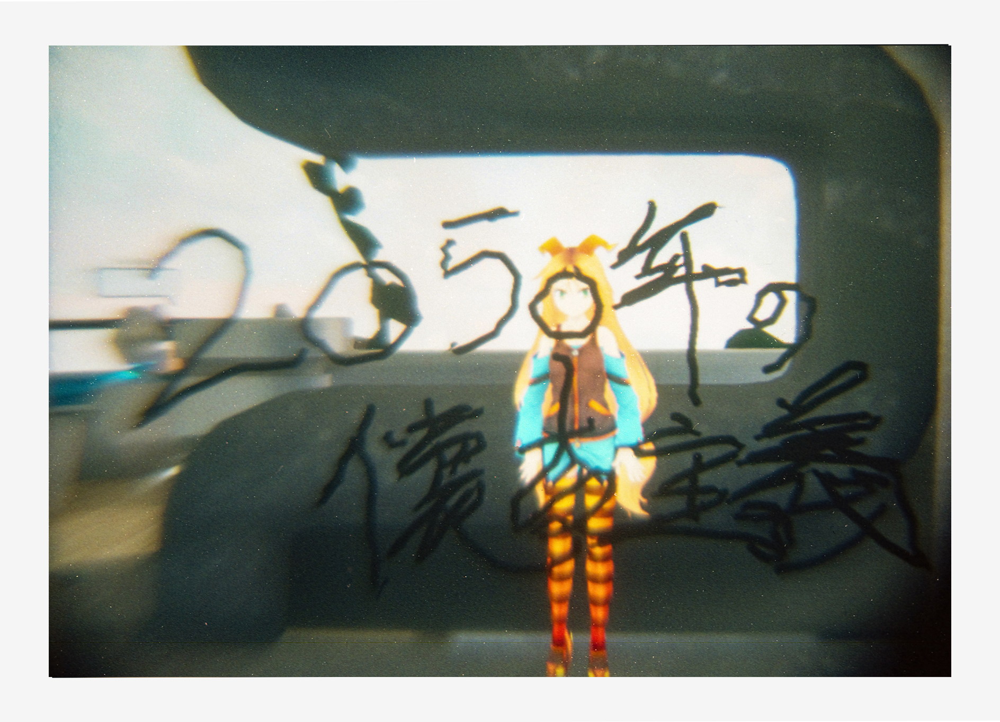
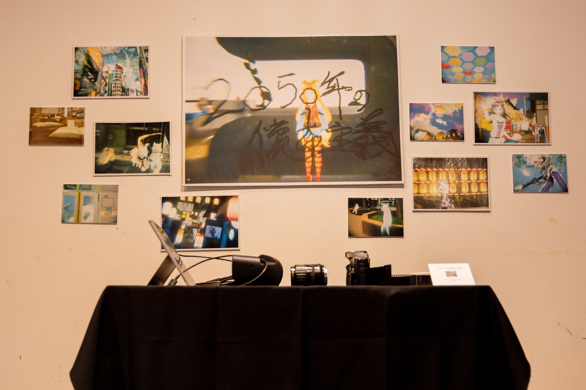
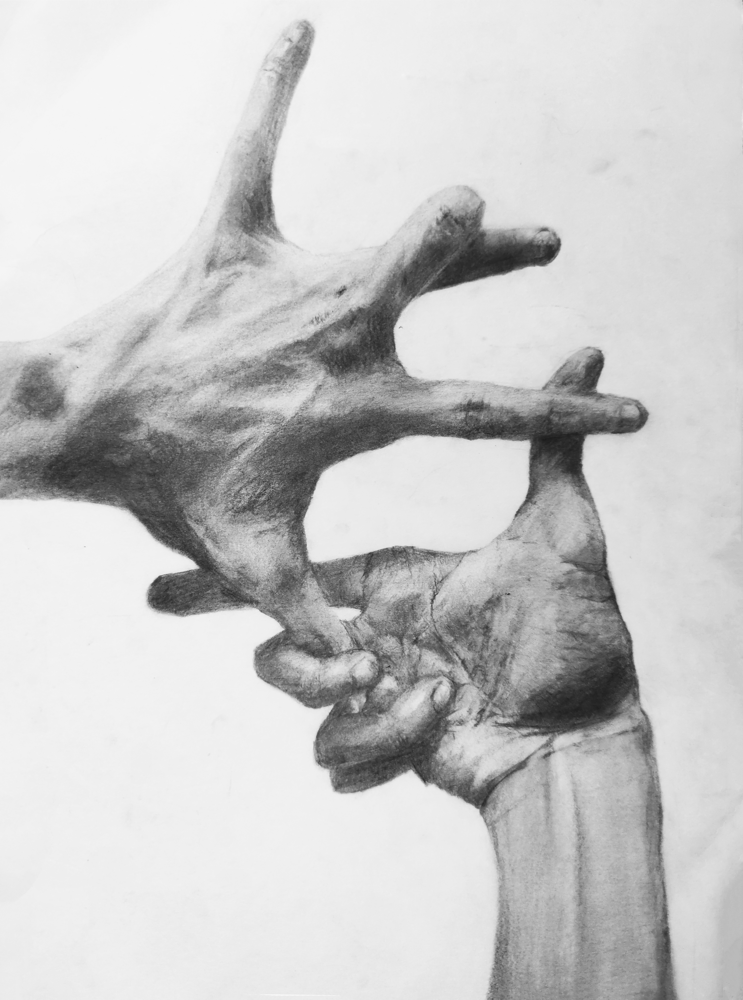

作品置場へのリンク

映像
木葉はづく - Youtubeプレイリスト - 担当したMVのリスト。
木葉はづく - Youtube - 自主制作作品。
ナーバスタキオン - niconico - MAD作品。
絵
折メ思案 - pixiv - ウマ娘二次創作イラスト。
EARTUFT - Twitter - 退廃的なけものフレンズ二次創作イラスト。
すとりぎ - pixiv - けものフレンズ二次創作イラスト。
写真
uwesaine - ポートフォリオ - 組写真作品の一覧。
uwesaine - Instagram - スナップ写真等の一覧。
すとりぎ - 撮影したコスプレまとめ - 撮影したコスプレ写真の一覧。
2Dグラフィックス
p5.js Web Editor - processing作品。
単発作品
ここからは単発制作の作品です。単発とは、製作時期が決まっているもの、複合作品であるもの等を指します。
また、名義を別に用意する必要があった場合等も含みます。
liu - 2050年の懐古主義
学校の特別授業にて制作しました。
フィルムカメラでHUDを介してVR空間を撮影したメディアアートです。

 講義「メディアアート」成果発表会『37．5℃展』にてセッティングを行いました。
講義「メディアアート」成果発表会『37．5℃展』にてセッティングを行いました。

liu - デッサン
学校課題を複数制作しました。一部抜粋です。
デッサン-手を組む
